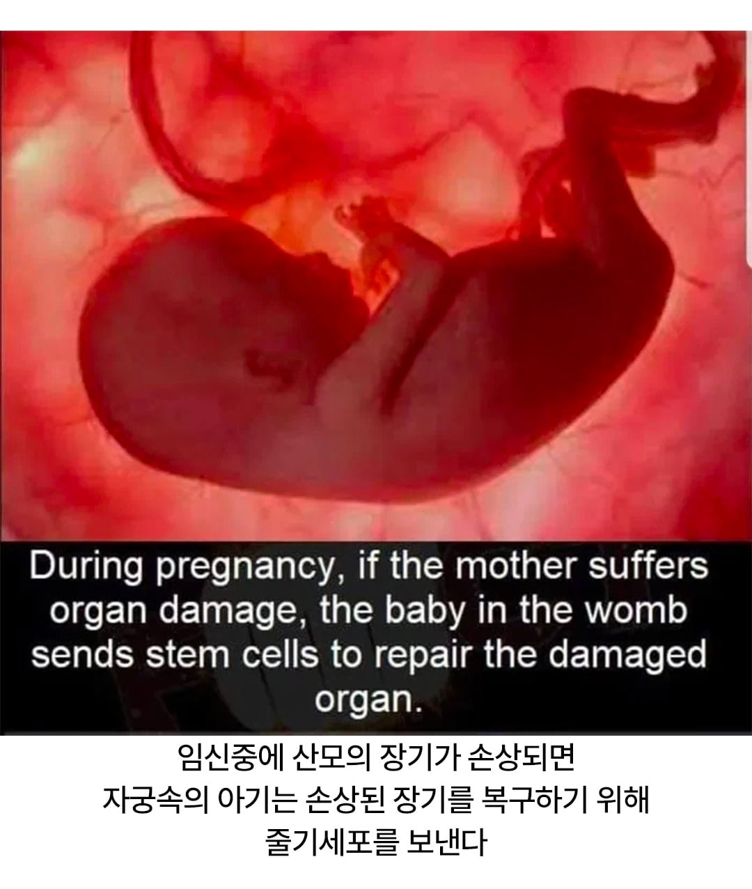
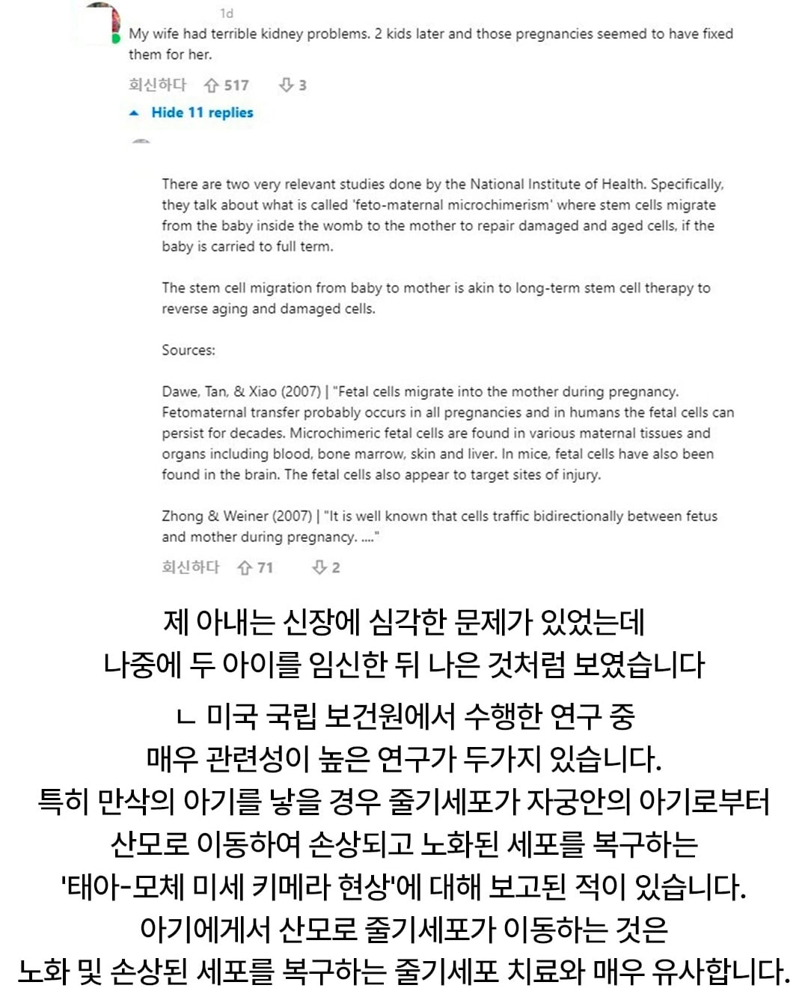

자가당착에 빠져버렷어염
임신하면 태반이 생기고 산모-태아 간 물질·세포 교환이 일어난다는건 사실이고,
태아에게 줄 치유 자원을 산모가 필요할 때 자기 쪽으로 전용한다는 건 너만의 세상속 논리라는거지.
특별한 치유 자원이 임신해야만 생긴다는 근거, 그 자원이 원래 태아에게 가는 용도라는 근거,
산모가 그걸 자기 치료로 돌린다는 근거가 있어야 주장으로 성립되는거고.
태반 얘기만 반복한다고 중간 과정이 자동으로 증명되지 않다는건 이해가능할거같은데..
이해안되면 오늘 차분히 생각해보면 될것같다 이상!
ㅋㅋㅋ 최초 댓글을 저따위로 적어놓고 혼자 잘 노네
지금 하는 그 주장은 본문 내용 최초 작성자에게 가서 따지든가 말든가 시간이 남아도는 너가 알아서 해
태아는 탯줄로 연결되어서 원래 혈관통해 세포가 많이 이동함
아이에게 공급 중단하고 본인 치유에 사용해서 낫는거면
애초에 아이없을때는 그걸 왜못함?
ㅋㅋㅋ 다중계정으로 같은 질문을 반복하는건가 ㅋㅋㅋ
줄기세포가 언제 어떤 상황에서 생성되는지 모르는 멍청이들이 많은가보네
태반과 탯줄 에서 생산해내는 줄기세포랑 성인이 가진 줄기세포가 같다고 생각함 ㅎㅎ?
성인이 갖고있는 줄기세포가 만능이 아닌데;;;
이걸 제가 고치라구요? 까짓거 함해보죠
류마티스 관절염이 임신하면 없어진다던데 저런 이유였나
생물학적으로 '숙주를 살려야 태어날 수 있다' 라고 느껴져서 발동되는 생존스킬인가 ㄷㄷ
???? 네가 살아야 내가 살어!!!
일리가있다....
사실 아이가 보내는게 아니라 엄마가 빼간다고 봐야겠지ㅋㅋ
-생명의 신비네 진짜
뱃속에서부터 효도하노
그러니까 너가 처음에 댓글단게 심각했다는거야
임신안한 평소에 줄기세포가 없는데 치유가 가능하겠냐
에휴 한심하다 정말